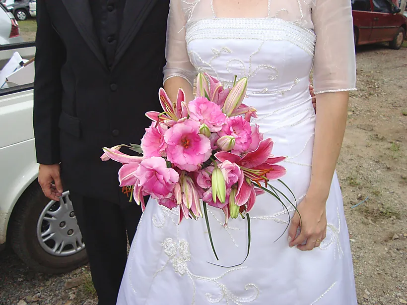

O que ela guarda
Limoeiro, Pernambuco
Veio para São Paulo aos 19 anos, atrás de trabalho. O ofício com flor e tecido começou pouco depois e não saiu mais.
Depois da capital paulista, Eliane morou em Cesário Lange. Foi numa floricultura de lá que ela aprendeu buquê, arranjo e decoração de casamento, fazendo.
Casou com Jeremias. De 2005 a 2011 os dois trabalharam juntos com decoração de casamento. Quando a carreira dele abriu caminho, a família veio para Campinas.
A cidade é maior e o dia corre de outro jeito. Manter floricultura o tempo todo ficou difícil. O gosto ficou: flor, arranjo, festa. O que coube na rotina foram os tecidos. Cetim e outras peças, guardados em bom estado, para alugar.
Hoje ela mora em Campinas com os três filhos. O aluguel é de toalha de mesa, branca e colorida, nas medidas do catálogo. Quando a data pede um buquê, ela faz — é o começo do ofício, e por isso essas fotos estão aqui.

O que ela guarda